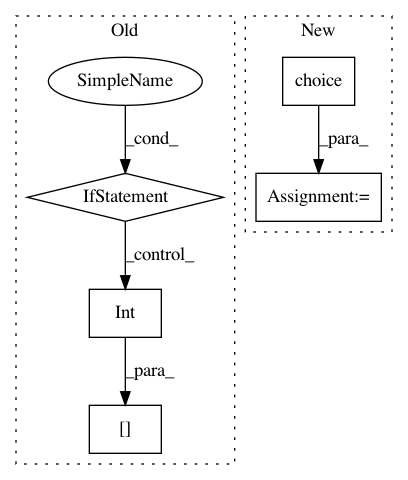

070003f70129fd8dd88364df6d2ae64c1d2a35f8,spynnaker/pyNN/models/neural_projections/connectors/fixed_number_post_connector.py,FixedNumberPostConnector,_get_post_neurons,#FixedNumberPostConnector#,28
Before Change
return self._get_delay_variance(self._delays, None)
def _get_post_neurons(self):
if self._post_neurons is None:
n = 0
while (n < self._post_n):
permutation = numpy.arange(self._n_post_neurons)
for i in range(0, self._n_post_neurons - 1):
j = int(self._rng.next(
n=1, distribution="uniform",
parameters=[0, self._n_post_neurons]))
(permutation[i], permutation[j]) = (
permutation[j], permutation[i])
n += self._n_post_neurons
if self._post_neurons is None:
self._post_neurons = permutation
else:
self._post_neurons = numpy.append(
self._post_neurons, permutation)
self._post_neurons = self._post_neurons[:self._post_n]
self._post_neurons.sort()
return self._post_neurons
def _post_neurons_in_slice(self, post_vertex_slice):
post_neurons = self._get_post_neurons()
After Change
// Loop over all the pre neurons
for m in range(0, self._n_pre_neurons):
if self._post_neurons[m] is None:
self._post_neurons[m] = numpy.random.choice(
self._n_post_neurons, self._n_post, False)
self._post_neurons[m].sort()
// This looks nice but it doesn"t work with PyNN 0.9 ?
// n = 0
In pattern: SUPERPATTERN
Frequency: 3
Non-data size: 5
Instances
Project Name: SpiNNakerManchester/sPyNNaker
Commit Name: 070003f70129fd8dd88364df6d2ae64c1d2a35f8
Time: 2017-11-24
Author: andrew.gait@manchester.ac.uk
File Name: spynnaker/pyNN/models/neural_projections/connectors/fixed_number_post_connector.py
Class Name: FixedNumberPostConnector
Method Name: _get_post_neurons
Project Name: mne-tools/mne-python
Commit Name: 676ed97f4500511b1dca88ecb1f1ee25dc705d19
Time: 2020-04-30
Author: larson.eric.d@gmail.com
File Name: mne/tests/test_source_space.py
Class Name:
Method Name: test_combine_source_spaces
Project Name: mne-tools/mne-python
Commit Name: 676ed97f4500511b1dca88ecb1f1ee25dc705d19
Time: 2020-04-30
Author: larson.eric.d@gmail.com
File Name: mne/forward/tests/test_make_forward.py
Class Name:
Method Name: test_forward_mixed_source_space